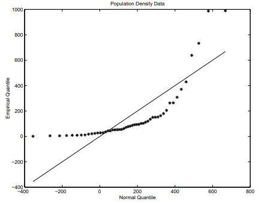
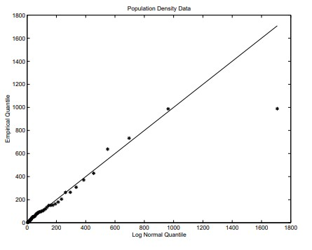
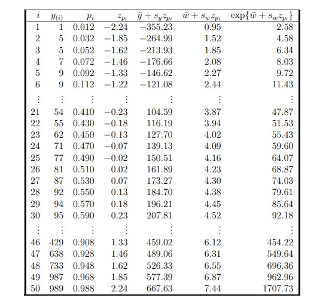

Chapter 7 Organizing & Describing Data
7.1 Frequency Distributions
Contingency (frequency) tables for categorical random variables, cell, marginal distributions.
Bar graph for categorical and for discrete random variables.
7.2 Data on Continuous Variables
Stem & Leaf Displays for continuous random variables.
Frequency Distributions & Histograms for continuous random variables. Area should be proportional to frequency regardless of whether bin widths are equal or not.
Scatter Plots for paired continuous random variables.
Statistic: A numerical characteristic of the sample. A \(\textbf{statistic is a random variable}\).
7.3 Order Statistics
Order statistics are the ordered sample values.
- The conventional notation is to denote the \(i^{th}\) order statistic as \(X_{(i)}\), where \(X_{(1)} \le X_{(2)} \le X_{(3)} \le \cdots \le X_{(n)}\).
Sample median: \(50^{th}\) percentile.
Quartiles: \(Q^1 = 25^{th}, Q^2 = 50^{th}\), and \(Q^3 = 75^{th}\) percentiles.
Interquartile Range: \(Q^3 − Q^1\).
Range: \(X^(n) − X^(1)\).
Midrange: \((X^{(n)} + X^{(1)})/2\).
Midhinge: \((Q^1 + Q^3)/2\).
Five Number Summary: \(X_{(1)}, Q_1, Q_2, Q_3, X_{(n)}\)
Quantiles: For a data set of size n, the quantiles are the order statistics \(X_{(1)}, \ldots , X_{(n)}\).
- The \(i^{th}\) quantile is the \(100p^{th}_i\) percentile, where \(p_i = (i − 3/8)/(n + 1/4)\).
- Note, the percentile is defined so that \(p_i \in (0, 1)\) for all \(i\).
- For large \(n\), \(p_i \approx i/n\).
Q-Q Plots: These are scatter plots of the quantiles from two distributions.
- If the distributions are the same, then the scatter plot should show a line of points at a 45 degree angle.
One application is to plot the empirical quantiles against the quantiles from a theoretical distribution.
- This is called a probability plot.
- Suppose, for example, that it is believed that the data have been sampled from a distribution having cdf \(F\).
- Then the probability plot is obtained by plotting \(F^{-1}(p_i)\ against\ X_{(i)}\) for \(i=1,...,n\).
To visualize whether or not the data could have come from a normal distribution, for example, the empirical quantiles can be plotted against normal quantiles, \(\mu + \sigma \Phi^{−1}(p_i)\).
- For example,
Below are Q-Q plots comparing the quantiles of the data to the quantiles of the normal distribution and to the quantiles of the log normal distribution.
- In the table, the variable \(ln(y)\) is labeled as \(w\).
- The quantiles of the normal distribution and the log normal distribution are
\[ \bar{y} + s_yz+{p_i}\ and\ exp\left \{\bar{w}+s_wz_{p_i} \right \} \]
respectively, where \(z_{p_i}=Φ^{−1}(p_i)\) is the \(100p_i^{th}\) percentile of the standard normal distribution.
- The smallest three values correspond to Alaska, Montana, and Wyoming. Values 46–50 correspond to Maryland, Connecticut, Massachusetts, New Jersey, and Rhode Island, respectively.



7.4 Data Analysis
Random variable versus realization:
- Let \(X_1, X_2, \ldots , X_n\) be a random sample from some population.
- Then \(X_i\) is a random variable whose distribution depends on the population at hand.
- Also, the distribution of \(X_1, X_2, \ldots , X_n\) is exchangeable.
- We will use lower case letters to denote a realization of the random sample.
- That is, \(x_1, x_2, \ldots , x_n\) is a realization of the random sample.
Outlier: An observation that is far from the bulk of the data.
Random Sample: A simple random sample is a sample taken from the population in a manner such that each possible sample of size \(n\) has an equal probability of being selected.
- Note, this implies that each unit has the same probability of being selected, but a sample taken such that each unit has the same probability of being selected is not necessarily a simple random sample.
Transformations of \(X\) and/or \(Y\) are sometimes useful to change a non-linear relationship into a linear relationship.
7.5 The Sample Mean
\(\bar{X}=\frac{1}{n}\sum_{i=1}^nX_i\) is a random variable whereas \(\bar{x}=\frac{1}{n}\sum_{i=1}^nx_i\) is a realization.
\(\sum_{i=1}^n(X_i-\bar{X})=0\) with probability 1 and \(\sum_{i=1}^n(x_i-\bar{x})=0\).
If \(X_1, \ldots , X_n\) is a random sample without replacement from a finite population of size \(N\) with mean \(\mu\) and variance \(\sigma^2\), then
\[ E(\bar{X})=\mu\ and \ Var(\bar{X})=\frac{\sigma^2}{n}\Bigg(1-\frac{(n-1)}{(N-1)}\Bigg)\]
- If \(X_1, \ldots , X_n\) is a random sample with or without replacement from an infinite population or with replacement from a finite population with mean \(\mu\) and variance \(\sigma^2\), then
\[ E(\bar{X})=\mu\ and\ Var(\bar{X})=\frac{\sigma^2}{n} \]
7.6 Measures of Dispersion
Sample variance: \(S^2=\frac{1}{n-1}\sum_{i=1}^n(X_i-\bar{X})^2\) is a random variable whereas \(s^2=\frac{1}{n-1}\sum_{i=1}^n(x_i-\bar{x})^2\) is a realization.
If \(X_1, \ldots , X_n\) is a random sample with or without replacement from an infinite population or with replacement from a finite population with mean \(\mu_X\) and variance \(\sigma^2_X\), then
\[ E(S^2_X)=\sigma^2_X \]
- Proof: First write \((X_i-\bar{X})\) as
\[ (X_i-\bar{X})^2=X_i^2-2X_i\bar{X}+\bar{X}^2 \]
- Accodingly
\[ S^2_X=\frac{1}{n-1}\Bigg[\sum_{i=1}^nX_i^2-n\bar{X}^2\Bigg] \]
Recall that if \(Y\) is a random variable with mean \(\mu_y\) and variance \(\sigma^2_Y\), then \(E(Y^2)=\mu_y^2+\sigma^2_Y.\)
In this application, \(E(\bar{X}^2)=\mu^2_X+\sigma^2_X/n\).
Accordingly,
\[ E(S^2_X)\frac{1}{n-1}\Bigg[n(\mu^2_X+\sigma^2_X)-n\bigg(\mu^2_X+\frac{\sigma^2_X}{n}\bigg)\Bigg]=\sigma^2_X \]
- If \(Y_1, \ldots , Y_n\) be a sample with sample mean \(\bar{Y}\) and sample variance \(S^2_Y\).
- Define \(X_i\) by \(X_i=a+bY_i\) for \(i=1,\ldots , n\).
- Then the sample mean and sample variance of \(X_1, \ldots , X_n\) are
\[ \bar{X}=a+b\bar{Y}\ and\ S^2_X=b^2S^2_Y \]
- Proof:
\[ \begin{align} \bar{X}&=\frac{1}{n}\sum_{i=1}^nX_i=\frac{1}{n}\sum_{i=1}^n(a+b{Y}_i)\\ &=\frac{1}{n}\bigg(na+b\sum_{i=1}^nY_i\bigg)=a+b\bar{Y} \end{align} \]
Also,
\[ \begin{align} S^2_X&=\frac{1}{n-1}\sum[X_i-\bar{X}]^2=\frac{1}{n-1}[a+bY_i-(a+b\bar{Y})]^2\\ &=\frac{1}{n-1}\sum[bY_i-b\bar{Y}]^2=\frac{1}{n-1}b^2\sum[Y_i-\bar{Y}]^2=b^2S^2_Y \end{align} \]
This result also holds true for realizations \(y_1, \ldots , y_n\).
\(MAD=n^{-1}\sum_{i=1}^n|X_i-\bar{X}|\) or, more commonly, \(MAD\) is defined as \(MAD=n^{-1}\sum_{i=1}^n|X_i-M|\) where \(M\) is the sample median.
Result: Let \(g(a)=\sum_{i=1}^n|X_i-a|\). Then, the minimizer of \(g(a)\) with respect to \(a\) is the sample median.
Proof: The strategy is to take the derivative of \(g(a)\) with respect to \(a\); set the derivative to zero; and solve for \(a\).
- First note that we can ignore any \(X_i\) that equals a because it contributes nothing to \(g(a)\).
- If \(X_i\neq a\), then
\[ \begin{align} \frac{d}{da}|X_i-a|&=\frac{d}{da}\sqrt{(X_i-a)^2}\\ &=\frac{1}{2}[(X_i-a)^2]^{-\frac{1}{2}}2(X_i-a)^2(-1)=-\frac{X_i-a}{|X_i-a|}\\ &=\begin{cases} -1& \text{ if } X_i>a; \\ 1& \text{ if } X_i<a. \end{cases} \end{align} \]
- Accordingly,
\[ \begin{align} \frac{d}{da}g(a)&=\sum_{i=1}^n[-I_{(-\infty,X_i)}(a)+I_{(X_i,\infty)}(a)]\\ &=-\#Xs\ larger\ than\ a+\#Xs\ smaller\ than\ a. \end{align} \]
- Setting the derivative to zero implies that the number of \(X\)s smaller than a must be equal to the number of \(X\)s larger than \(a\). Thus, a must be the sample median.
7.7 Correlation
Let \((X_1,Y_1),(X_2,Y_2),\ldots ,(X_n,Y_n)\) be a random sample of ordered pairs from a population having means \((\mu_X,\mu_Y)\), variances \((\sigma^2_X, \sigma^2_Y)\), and covariance \(\sigma_{X,Y}\).
The sample covariance between \(X\) and \(Y\) is
\[ S_{X,Y}\overset{def}{=}\frac{1}{n-1}\sum(X_i-\bar{X})(Y_i-\bar{Y}) \]
- The equation for \(S_{X,Y}\) can be written as
\[ S_{X,Y}=\frac{1}{n-1}\sum\bigg[X_iY_i-n\bar{X}\bar{Y}\bigg] \]
- Proof: Multiply the \(X\) and \(Y\) deviations to obtain the following:
\[ \begin{align} S_{X,Y}&=\frac{1}{n-1}\sum(X_iY_i-X_i\bar{Y}-\bar{X}Y_i+\bar{X}\bar{Y})\\ &=\frac{1}{n-1}\bigg[\sum_{i=1}^n[X_iY_i-\bar{Y}\sum_{i=1}^nX_i-\bar{X}\sum_{i=1}^nY_i+n\bar{X}\bar{Y}\bigg]\\ &=\frac{1}{n-1}\bigg[\sum_{i=1}^nX_iY_i-n\bar{Y}\bar{X}-n\bar{X}\bar{Y}+n\bar{X}\bar{Y}\bigg]\\ &=\frac{1}{n-1}\bigg[\sum_{i=1}^nX_iY_i-n\bar{X}\bar{Y}\bigg] \end{align} \]
- If the population is infinite or samples are taken with replacement, then
\[ E(S_{X,Y} ) = σ_{X,Y} \]
- Proof: First note that \(\sigma_{X,Y}=E(X_iY_i)- \mu_X\mu_Y\) and, by independence, \(E(X_iY_j)= \mu_X\mu_Y\) if \(i\neq j\). Also
\[ \begin{align} \bar{X}\bar{Y}&=\frac{1}{n^2}\bigg(\sum_{i=1}^n\ X_i\bigg)\bigg(\sum_{j=1}^n Y_j\bigg)=\frac{1}{n^2}\sum_{i=1}^n\sum_{j=1}^n X_iY_j\\ &=\frac{1}{n^2}\bigg[\sum_{i=1}^n\sum_{j=1}^n X_iY_j+\sum_{i=1}^n\sum_{i\neq j} X_iY_j\bigg] \end{align} \]
- Therefore,
\[ \begin{align} E(S_{X,Y})&=\frac{1}{n-1}E\bigg[\sum_{i=1}^nX_iY_i-\frac{1}{n}\sum_{i=1}^nX_iY_i-\frac{1}{n}\sum_{i\neq j}X_iY_j\bigg]\\ &=\frac{1}{n-1}E\bigg[\bigg(1-\frac{1}{n}\bigg)\sum_{i=1}^nX_iY_i-\frac{1}{n}\sum_{i\neq j}X_iY_j\bigg]\\ &=\frac{1}{n-1}[(n-1)E(X_iY_i)-(n-1)E(X_iY_j)]\\ &=E(X_iY_i)-E(X_iY_j)=E(X_iY_i)-µ_Xµ_Y = σ_{X,Y} \end{align} \]
- Sample Correlation Coefficient:
\[ r_{X,Y}\overset{def}{=}\frac{S_{X,Y}}{\sqrt{S^2_XS^2_Y}} \]
- If \(U_i=a+bX_i\) and \(V=c+dY_i\) for \(i=1,\ldots,n,\) then the sample covariance between \(U\) and \(V\) is
\[ S_{U,V}=bdS_{X,Y} \]
- Proof: By the definition of sample covariance
\[ \begin{align} S_{U,V}&=\frac{1}{n-1}\sum_{i=1}^n(U_i-\bar{U})(V_i-\bar{V})\\ &=\frac{1}{n-1}\sum_{i=1}^n[a+bX_i-(a+b\bar{X})]+[c+dY_i-(c+d\bar{Y})]\\ &=\frac{1}{n-1}\sum_{i=1}^nbd(X_i-\bar{X})(Y_i-\bar{Y})=bdS_{X,Y} \end{align} \]
- If \(U_i=a+bX_i\) and \(V=c+dY_i\) for \(i=1,\ldots , n\), then the sample correlation between \(U\) and \(V\) is
\[ r_{U,V}=sing(bd)r_{X,Y} \]
- Proof: By the definition of sample correlation,
\[ \begin{align} r_{U,V}=\frac{S_{U,V}}{\sqrt{S^2_US^2_V}}&=\frac{bdS_{X,Y}}{\sqrt{b^2S^2_Xd^2S^2_Y}}\\ &=\frac{bd}{|bd|}\frac{S_{X,Y}}{S^2_XS^2_Y}\\ &=sing(bd)r_{X,Y} \end{align} \]